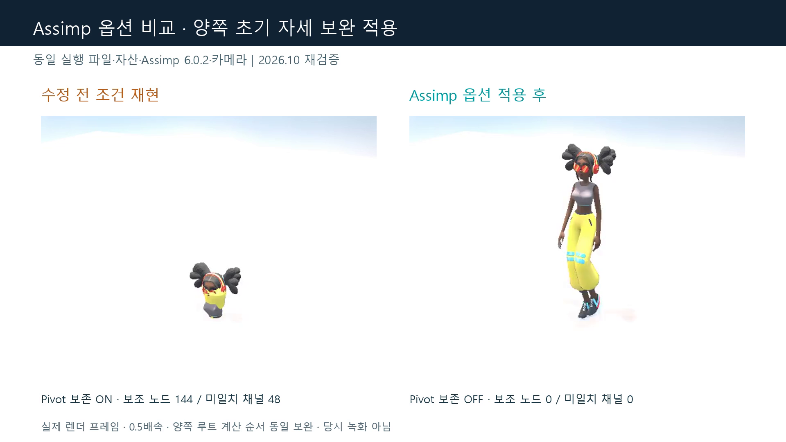
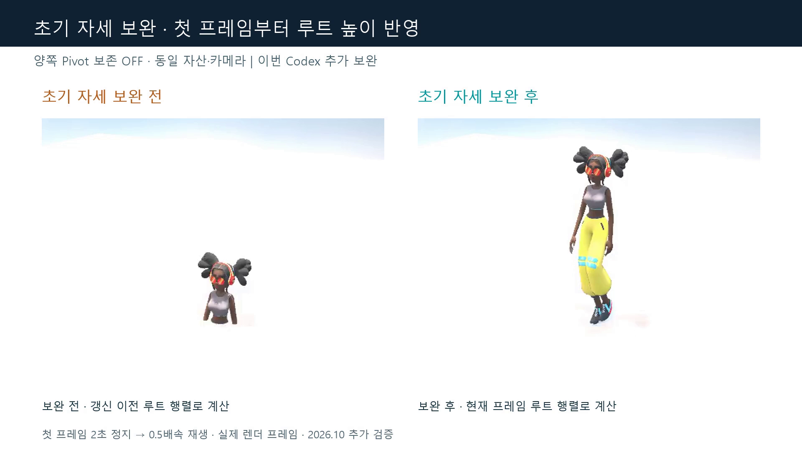

01 · Assimp 옵션 비교 — 양쪽에 초기 자세 보완 적용
문제
Pivot 보존 ON에서는 캐릭터 몸이 한곳에 뭉친다.
해결·판단
당시 보정과 같은 Pivot 보존 OFF를 적용한다. 이번에 발견한 루트 초기 자세 보완은 양쪽 모두에 동일 적용했다.
검증 방법
같은 실행 파일·DLL·자산·카메라·보행 클립에서 Assimp 옵션만 1/0으로 바꿨다. 실제 GPU 프레임을 조건별 240장 기록하고 정상 창 닫기로 종료했다.
결과
Pivot OFF의 첫 프레임부터 신체가 정상 높이에 표시된다. Pivot ON의 형태 붕괴와 OFF의 보행 자세 차이는 초기 자세 보완 후에도 유지됐다. 이는 현재 자산·보행 구간의 결과다.
양쪽 초기 자세 보완 동일 적용. 240프레임 전체·0.5배속·동일 영역 확대. 하단 수치는 임포트 로그 요약이며 당시 녹화가 아니다.


02 · 이번 Codex 추가 보완 — 루트 초기 자세 계산 순서
문제
원본과 동일한 AnimationData::Update는 루트 높이를 갱신하기 전에 parentMatrix를 복사했다. 첫 자세에는 갱신 전 높이가 쓰이고 이후 이동도 이전 값이 적용됐다.
해결·판단
루트 변환 갱신이 끝난 뒤 parentMatrix를 구성하도록 위치를 옮겼다. 별도 재현 사본에 적용했으며 원본 저장소는 변경하지 않았다. 사용자가 영상의 초기 침하를 지적하고 보완을 요청했고, Codex가 이번 수정·검증을 수행했다.
검증 방법
실제 Update를 호출하는 4개 수치 검사를 수정 전후 비교했다. 별도 영상은 양쪽 Pivot OFF로 고정하고 초기 자세 보완 전후만 비교했다. 첫 프레임을 2초 정지한 뒤 전체 240프레임을 0.5배속으로 재생한다.
결과
수정 전 3개 실패/1개 통과에서 수정 후 4개 모두 통과. 첫 프레임의 루트/자식 높이는 0/10에서 기대값 100/110으로 바뀌었고 실제 렌더 첫 화면의 침하도 해소됐다.


| 수치 검사 | 보완 전 | 보완 후 |
|---|---|---|
| 초기 루트 높이·자식 반영 | 실패 · 0 / 10 | 통과 · 100 / 110 |
| 현재 프레임 루트 이동 | 실패 · 이전 값 | 통과 · 현재 값 |
| 프레임 0 재시작·수평 누적 유지 | 실패 · 이전 높이 | 통과 |
| 높이 0 대조 조건 | 통과 | 통과 |
공개 페이지에는 초기 자세 비교 이미지와 수치 검사 발췌를 제공한다. 별도 초기 자세 비교 영상과 수정 패치는 로컬 원본 자료에 보존했다.
03 · 5개 클립의 구조 검사와 촬영 종료 결과
문제
일부 클립에 구조 불일치가 남거나 새 촬영이 비정상 종료되는지 확인할 필요가 있었다.
해결·판단
초기 자세 보완 후 동일 계측을 다시 실행하고, 촬영 종료는 WM_CLOSE를 사용했다.
검증 방법
모델 1개·클립 5개의 구조 로그와 세 실행의 프레임 수·종료 코드를 확인했다. 과거 결과를 새 실행 결과로 대신 쓰지 않았다.
결과
5개 클립 모두 보조 노드 144→0, 미일치 채널 48→0. 미등록 채널의 기본 0번 매핑 경로는 합계 240→0회. 세 촬영 실행은 각각 240프레임을 기록하고 종료 코드 0이었다.
| 검사 | 결과 | 범위 |
|---|---|---|
| 클립 보조 노드 | 144 → 0 | 5개 모두 |
| 본 이름 미일치 채널 | 48 → 0 | 5개 모두 |
| 미등록 이름 기본 0번 매핑 | 240 → 0회 | 5클립 합계 |
| 실제 프레임 기록 | 각 240프레임 | 초기 자세 보완 전 / ON / OFF |
| 일반 창 닫기 | 각 종료 코드 0 | 세 실행 모두 |
04 · 당시 역할과 이번 추가 작업의 구분
문제
최초 Assimp 수정 세션을 확보하지 못했으므로 당시 원인 분석·옵션 선택·코드 작성의 분담은 확정할 수 없다.
해결·판단
당시 문서·커밋으로 확인되는 내용과 이번 초기 자세 보완을 구분했다.
검증 방법
7월 수정 커밋·사용자 실행 확인 문서·8월 후속 대화와 이번 수정 패치·검사·촬영 기록을 대조했다.
결과
당시 사용자 작업은 문제 인지와 수정 후 Debug/Release 직접 확인까지 근거가 있다. 이번에는 사용자가 초기 침하를 지적하고 보완을 요청했으며, Codex가 계산 순서 수정·회귀 검사·촬영을 수행했다. 이번 작업을 과거 사용자 기여로 소급하지 않는다.
05 · 검증 범위와 종료 예외 정정
문제
이전 보고서의 초기 자세·종료 한계는 추가 조사와 보완 결과를 반영해야 한다.
해결·판단
초기 자세는 이번 수정과 수치·화면 검사로 보완했다. 종료 예외는 촬영용 PostQuitMessage 경로에서 유발된 것으로 구분하고 새 촬영은 WM_CLOSE를 사용했다.
검증 방법
기존 원본 실행 파일과 재현 사본의 일반 창 닫기 정상 결과, 예외 발생 경로의 계측, 새 촬영 종료 로그를 확인했다.
결과
기본 프로젝트의 일반 종료 실패 또는 Assimp 보정의 실패라고 쓰지 않는다. 새 촬영은 모두 정상 종료됐다. 다만 다른 4개 클립은 임포트 구조만 검사했고 전체 재생·상태 전환·장시간·타 자산은 아직 검증하지 않았다.
검증 범위와 남은 작업
- 수치 검사 4개는 초기 높이·현재 이동·프레임 0 재시작·높이 0 대조를 다룬다. 일반적인 모든 애니메이션 조건을 보증하지 않는다.
- 구조 검사는 모델 1개와 5개 클립. 실제 재생 비교는 보행 클립 240프레임에 한정한다.
- 이번 실행은 Release x64. 다른 클립 전체 재생·리타게팅·장시간 실행·임의 자산·Debug 재실행은 미검증이다.
- 버전 간 비교를 하지 않았으므로 Assimp 6.x에서 처음 발생한 변경이나 모든 FBX의 보편적 해결이라고 주장하지 않는다.
- LoadAnimation의 설정은 코드로 확인했지만 이번 Ex1701 실행은 Load 경로를 사용한다.
- 이 보고서는 2026년 10월 재검증 기록을 공개용으로 정리했다. 당시 보정과 이번 Codex 추가 보완의 구분을 유지한다.
공개 근거
원본 기록에서 판정에 필요한 결과를 발췌했다. 원시 로그·스크립트·압축 자료·대화 식별자는 공개하지 않는다.